Anleitung VPN-Verbindung
Laden Sie den VPN-Client herunter:Tunnelblick_3.7.7_build_5150.dmg
Öffnen Sie Tunnelblick_3.7.7_build_5150.dmg mit einem Doppelklick.
Klicken Sie doppelt auf das Tunnel-Symbol.
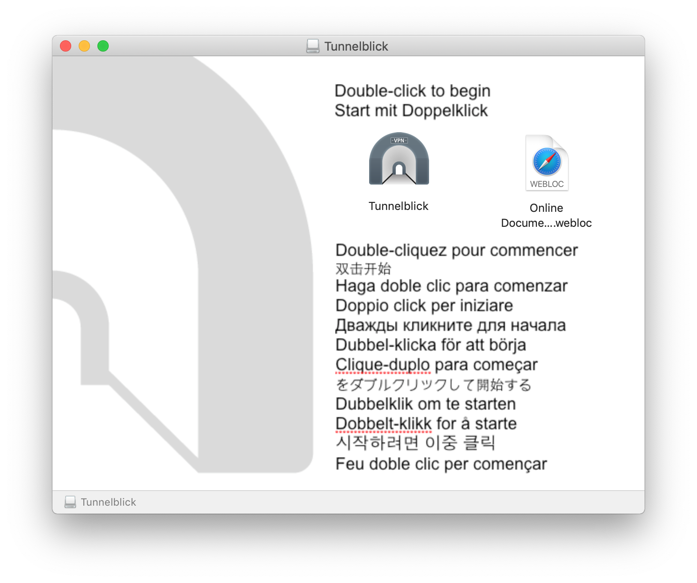
Bestätigen sie die Installation mit Ihrem Administrator-Passwort Ihres Macs.
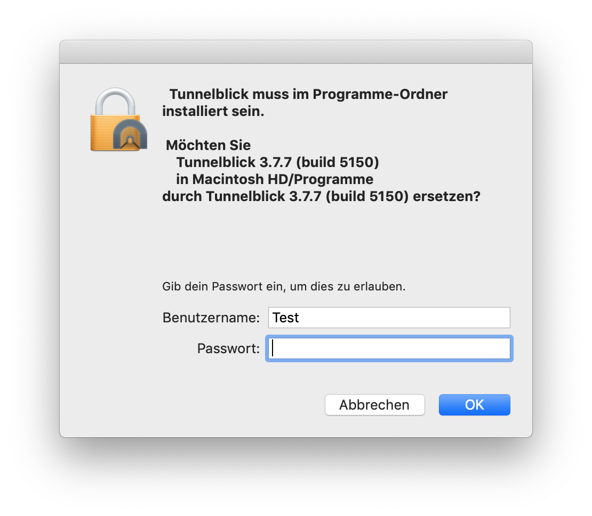
Nun erschein ein Tunnel-Symbol oben rechts in der Statusleiste (Neben dem W-LAN-Symbol).
Laden Sie die Konfigurations-Datei für Tunnelblick herunter: kassiere__ssl_vpn_config.ovpn
Wechseln sie in den Dowload-Ordner und öffnen sie die Datei kassiere__ssl_vpn_config.ovpn mit einem Doppelklick
Wählen sie Nur für diesen Benutzer.
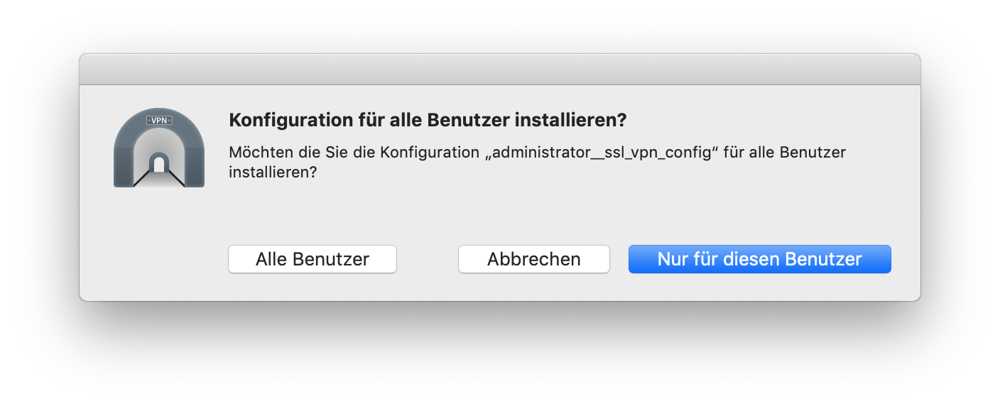
Bestätigen Sie die Installtion der Konfiguration mit ihrem Administrator-Passwort Ihres Macs.
Die nachfolgende Warnmeldung können sie mit OK bestätigen.
Klicken Sie in der Statusleiste auf das Tunnel-Symbol und wählen Sie "kassiere__ssl_vpn_config" verbinden
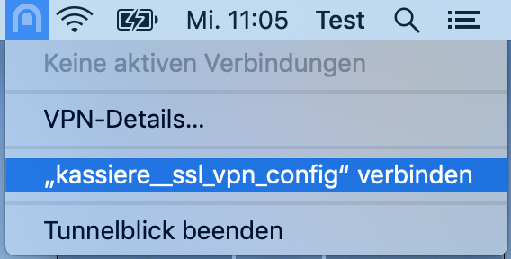
Nun erscheint ein Anmeldefenster. Bitte geben sie die ihnen zur verfügung gestellten Informationen ein (Bitte geben Sie nicht ihre persönlichen Daten ein, die benögtigen Sie erst später).
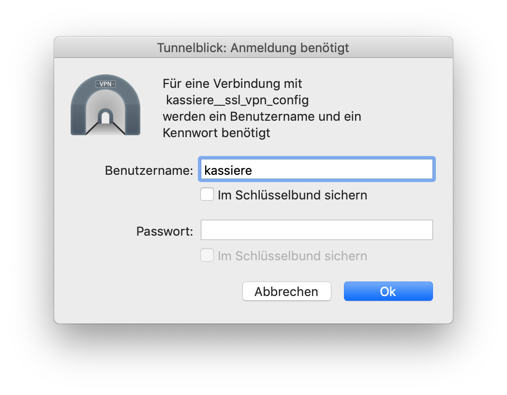
In der oberen rechten Ecke erscheint nun ein Verbindungsstatusfenster. Sobald dieses eine grüne Schrift zeigt, ist die Verbindung erfolgreich hergestellt.
Klicken Sie auf diesen Link und danach auf Anzeigen in: Mac App Store
Klicken Sie auf LADEN
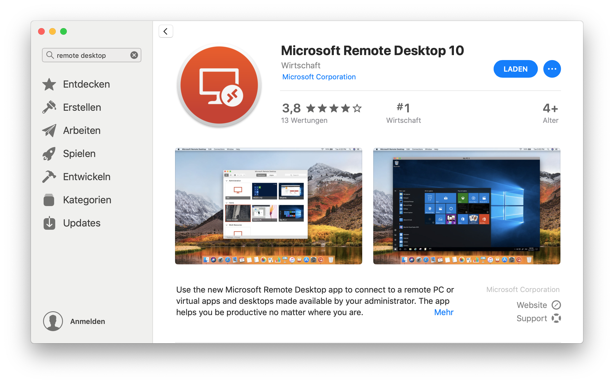
Sobald der Download beendet wurde, erscheint ein Button ÖFFNEN. Klicken Sie diesen an.
Nun sehen sie ein leeres Microsoft Remote Desktop Fenster.
Laden Sie die Konfigurationsdatei herunter: DWare_Bezirke_extern_windows.rdp
Wechseln Sie in den Downloads Ordner.
Entfernen sie die Endung .txt indem Sie die Datei umbenennen.
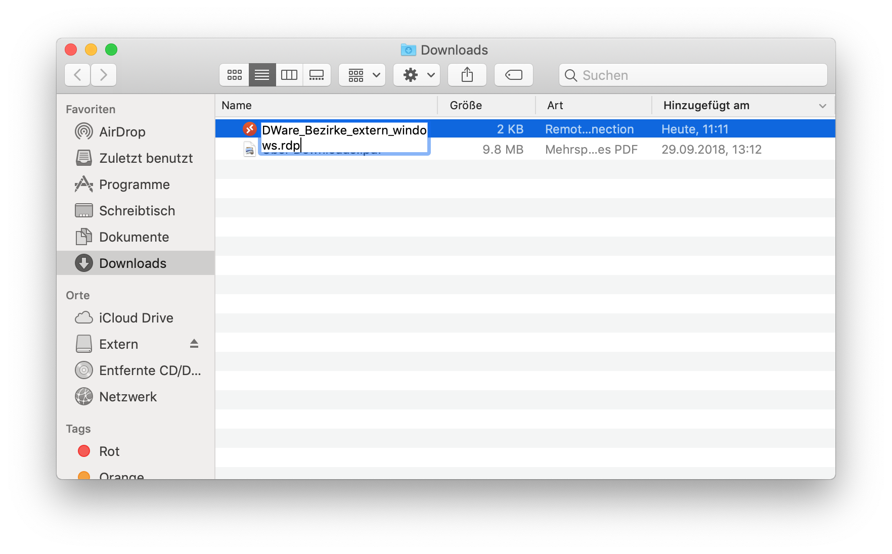
Sie werden nun gefragt ob Sie wirklich die Dateiendung ändern wollen. Bestätigen sie mit .rdp verwenden
Öffnen sie die .rdp Datei nun mit einem Doppelklick. Es erscheint ein Fenster von Microsoft Remote Desktop.
Bestätigen sie mit Continue
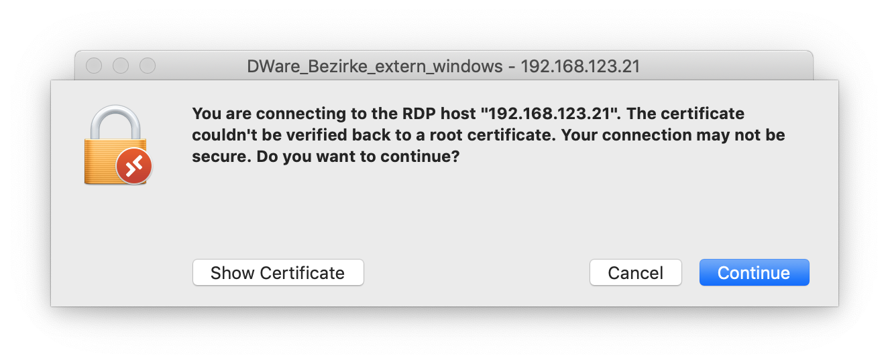
Nun erscheint ein Anmeldefenster. Bitte geben sie hier ihre persönlichen Anmeldedaten ein.
HINWEIS: Bitte löschen sie die Angabe EMKDOM\ nicht, geben sie stattdessen ihren Benuzernamen nach EMKDOM\ ein.
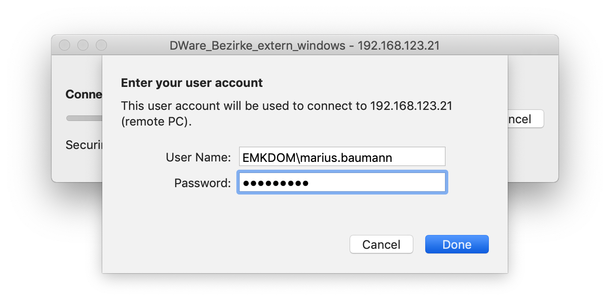
Bestätigen Sie mit Done
Bestätigen Sie mit Continue
Nun sind Sie wie gewohnt auf dem Server.
Öffnen Sie Microsoft Remote Desktop.
Klicken Sie im Menu am oberen Bildschirmrand auf Connections und anschliessend auf import Desktops...
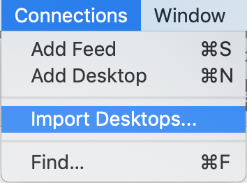
Wählen Sie die zu bearbeitende Remote-Desktop-Verbindung aus.
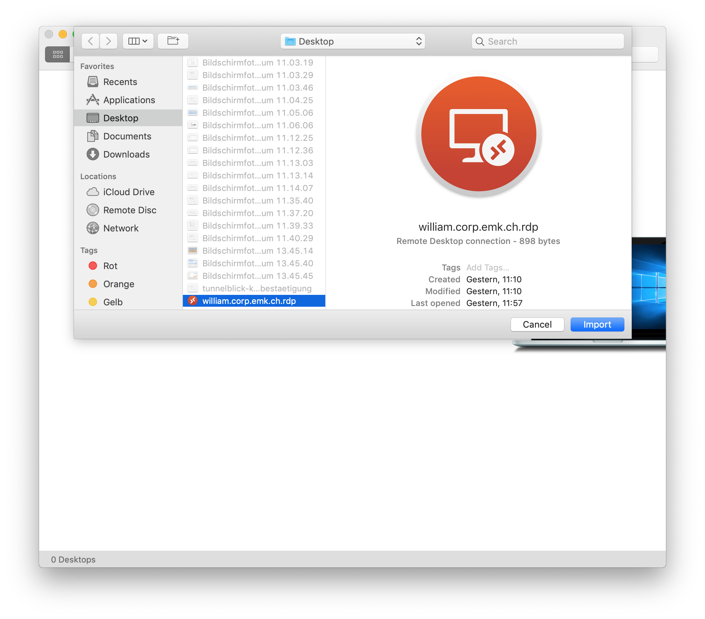
Nun erscheint diese Verbindung im Microsoft Remote Desktop Fenster. Klicken sie auf den Bleistift um die Verbindung zu editieren.
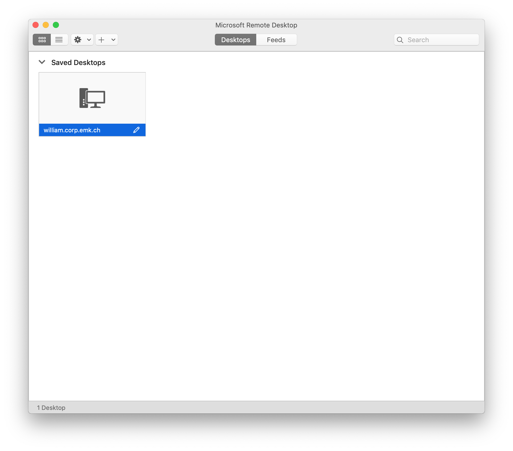
Wechseln Sie auf Local Resources.
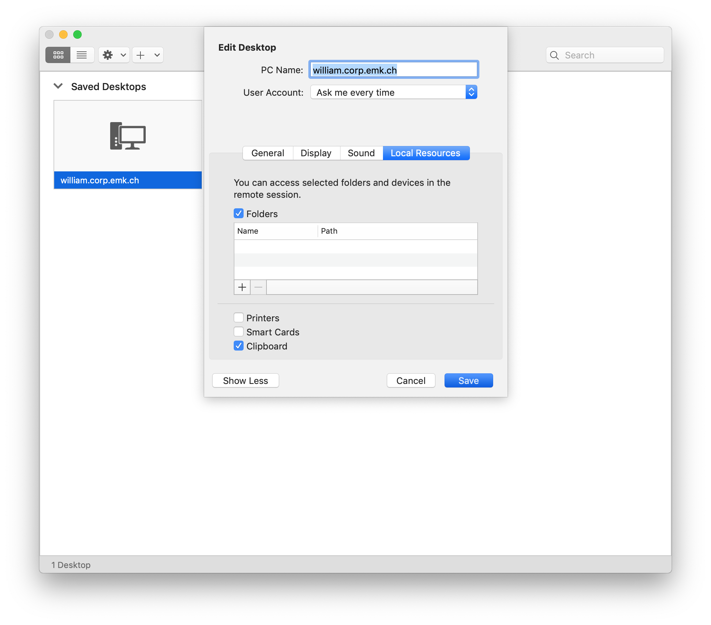
Klicken Sie auf das + Symbol um eine Lokale Resource hinzuzufügen.
Wählen Sie den Order auf ihrem Mac, den sie auch auf dem Server verbunden haben möchten.
Stellen Sie sicher, dass unter User Account, Ask me every time ausgewählt ist
Bestätigen Sie mit Save
Wenn Sie nun die Verbindung mit einem Doppelklick starten, wird der lokale Ordner ihres Macs auf dem Server als Netzlaufwerk angezeigt.
HINWEIS:Stellen Sie sicher, dass in jedem Fall beim Login EMKDOM\ vor ihrem Benutzernamen steht (Das \ ist ein Backslash, auf dem Mac mit der Tastenkombination alt + shift + 7 hinzuzufügen).